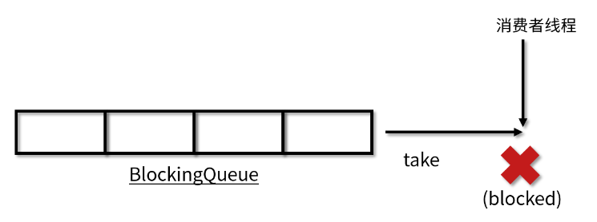
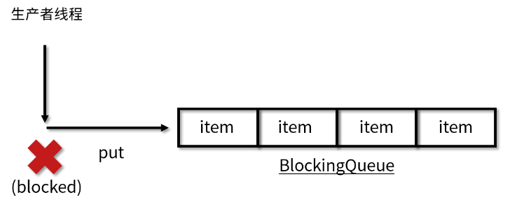
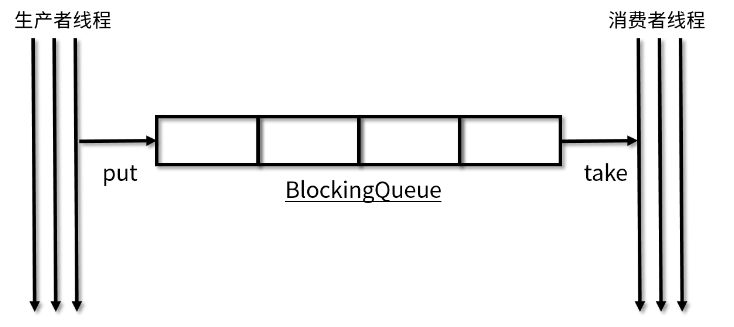
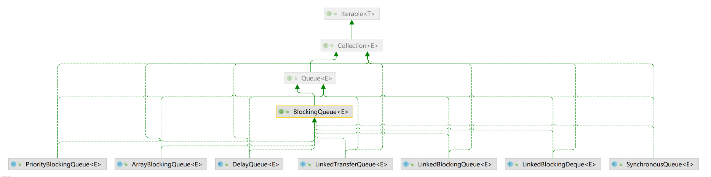

了解阻塞队列之前，我们先了解下队列
Queue
1 | public interface Queue<E> extends Collection<E> { |
BlockingQueue接口
BlockingQueue 继承了 Queue 接口，是队列的一种。Queue 和 BlockingQueue 都是在 Java 5 中加入的。阻塞队列（BlockingQueue）是一个在队列基础上又支持了两个附加操作的队列，常用解耦。两个附加操作:
- 支持阻塞的插入方法put: 队列满时，队列会阻塞插入元素的线程，直到队列不满。
- 支持阻塞的移除方法take: 队列空时，获取元素的线程会等待队列变为非空
入队
（1）offer(E e)：如果队列没满，返回true，如果队列已满，返回false（不阻塞）
（2）offer(E e, long timeout, TimeUnit unit)：可以设置阻塞时间，如果队列已满，则进行阻塞。超过阻塞时间，则返回false
（3）put(E e)：队列没满的时候是正常的插入，如果队列已满，则阻塞，直至队列空出位置
出队
（1）poll()：如果有数据，出队，如果没有数据，返回null （不阻塞）
（2）poll(long timeout, TimeUnit unit)：可以设置阻塞时间，如果没有数据，则阻塞，超过阻塞时间，则返回null
（3）take()：队列里有数据会正常取出数据并删除；但是如果队列里无数据，则阻塞，直到队列里有数据
BlockingQueue常用方法
当队列满了无法添加元素，或者是队列空了无法移除元素时：
- 抛出异常：add、remove、element
- 返回结果但不抛出异常：offer、poll、peek
- 阻塞：put、take
| 方法 | 抛出异常 | 返回特定值 | 阻塞 | 阻塞特定时间 |
|---|---|---|---|---|
| 入队 | add(e) | offer(e) | put(e) | offer(e, time, unit) |
| 出队 | remove() | poll() | take() | poll(time, unit) |
| 获取队首元素 | element() | peek() | 不支持 | 不支持 |
阻塞队列特性
阻塞
阻塞队列区别于其他类型的队列的最主要的特点就是“阻塞”这两个字，所以下面重点介绍阻塞功能：阻塞功能使得生产者和消费者两端的能力得以平衡，当有任何一端速度过快时，阻塞队列便会把过快的速度给降下来。实现阻塞最重要的两个方法是 take 方法和 put 方法。
take 方法
take 方法的功能是获取并移除队列的头结点，通常在队列里有数据的时候是可以正常移除的。可是一旦执行 take 方法的时候，队列里无数据，则阻塞，直到队列里有数据。一旦队列里有数据了，就会立刻解除阻塞状态，并且取到数据。过程如图所示：

put 方法
put 方法插入元素时，如果队列没有满，那就和普通的插入一样是正常的插入，但是如果队列已满，那么就无法继续插入，则阻塞，直到队列里有了空闲空间。如果后续队列有了空闲空间，比如消费者消费了一个元素，那么此时队列就会解除阻塞状态，并把需要添加的数据添加到队列中。过程如图所示：

思考：阻塞队列是否有容量限制？
是否有界
阻塞队列还有一个非常重要的属性，那就是容量的大小，分为有界和无界两种。无界队列意味着里面可以容纳非常多的元素，例如 LinkedBlockingQueue 的上限是 Integer.MAX_VALUE，是非常大的一个数，可以近似认为是无限容量，因为我们几乎无法把这个容量装满。但是有的阻塞队列是有界的，例如 ArrayBlockingQueue 如果容量满了，也不会扩容，所以一旦满了就无法再往里放数据了。
应用场景
BlockingQueue 是线程安全的，我们在很多场景下都可以利用线程安全的队列来优雅地解决我们业务自身的线程安全问题。比如说，使用生产者/消费者模式的时候，我们生产者只需要往队列里添加元素，而消费者只需要从队列里取出它们就可以了，如图所示：

因为阻塞队列是线程安全的，所以生产者和消费者都可以是多线程的，不会发生线程安全问题。生产者/消费者直接使用线程安全的队列就可以，而不需要自己去考虑更多的线程安全问题。这也就意味着，考虑锁等线程安全问题的重任从“你”转移到了“队列”上，降低了我们开发的难度和工作量。
同时，队列它还能起到一个隔离的作用。比如说我们开发一个银行转账的程序，那么生产者线程不需要关心具体的转账逻辑，只需要把转账任务，如账户和金额等信息放到队列中就可以，而不需要去关心银行这个类如何实现具体的转账业务。而作为银行这个类来讲，它会去从队列里取出来将要执行的具体的任务，再去通过自己的各种方法来完成本次转账。这样就实现了具体任务与执行任务类之间的解耦，任务被放在了阻塞队列中，而负责放任务的线程是无法直接访问到我们银行具体实现转账操作的对象的，实现了隔离，提高了安全性。
常见阻塞队列
BlockingQueue 接口的实现类都被放在了 juc 包中，它们的区别主要体现在存储结构上或对元素操作上的不同，但是对于take与put操作的原理，却是类似的。
| 队列 | 描述 |
|---|---|
| ArrayBlockingQueue | 基于数组结构实现的一个有界阻塞队列 |
| LinkedBlockingQueue | 基于链表结构实现的一个有界阻塞队列 |
| PriorityBlockingQueue | 支持按优先级排序的无界阻塞队列 |
| DelayQueue | 基于优先级队列（PriorityBlockingQueue）实现的无界阻塞队列 |
| SynchronousQueue | 不存储元素的阻塞队列 |
| LinkedTransferQueue | 基于链表结构实现的一个无界阻塞队列 |
| LinkedBlockingDeque | 基于链表结构实现的一个双端阻塞队列 |


...
...
Copyright 2021 sunfy.top ALL Rights Reserved